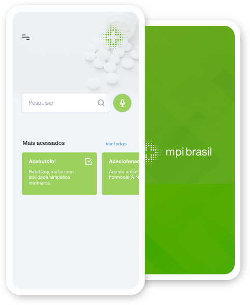

Sua busca rápida sobre medicamentos potencialmente inapropriados para idosos.
Ir a App Store Ir ao Google Play
Atualmente, foi desenvolvido uma nova versão do aplicativo MPI Brasil em parceria com o SocialTech. O foco do projeto é a promoção da prescrição de medicamentos apropriados (MPI) para idosos. Esta parceria iniciou em 2009 com o projeto de Avaliação Multidimensional do Idoso, no qual foi realizada uma enquete domiciliar com idosos adscritos em três unidade de saúde da família de Vitória da Conquista na Bahia. Observamos que 34,5% dos idosos utilizavam pelo menos um MPI e que os fatores associados ao uso destes medicamentos foram: i) a baixa escolaridade, raça negra, o uso de 4 (quatro) ou mais medicamentos diários; ii) o recebimento de medicamentos pelo SUS (em relação aquisição no setor privado) e iii) o uso de medicamentos prescritos por médicos.(OLIVEIRA et al., 2012).
Na época, atribuímos estes achados ao desconhecimento dos médicos da atenção básica sobre MPI e a baixa disponibilidade de alternativas terapêuticas mais seguras para idosos no SUS. A fim de contribuir para a redução da prescrição de MPI, foram desenvolvidas estratégias para conscientização dos profissionais de saúde envolvidos na assistência ao idoso sobre o risco do uso de MPI. A primeira consistiu na adaptação e validação de critérios nacionais de identificação de MPI, que foram publicados em 2016 como o Consenso Brasileiro de Medicamentos Potencialmente Inapropriados para Idosos (OLIVEIRA et al., 2016). A segunda estratégia consistiu no desenvolvimento de um aplicativo para dispositivos móveis a fim de tornar acessível o conhecimento sobre MPI como suporte a prescrição apropriada para idosos, contribuindo tanto com a redução da prescrição destes medicamentos, como com a desprescrição dos MPI já em uso ou com o monitoramento ativo dos pacientes quando o uso desses medicamentos fosse necessário.
O aplicativo desenvolvido com os dados do Consenso foi chamado de
MPI Brasil e ganhou o prêmio de 3º melhor tema livre de
Gerontologia quando apresentado no Congresso Brasileiro de
Geriatria e Gerontologia em 2018 (AMORIM et al., 2018). Na época
da apresentação, estávamos desenvolvendo um ensaio clínico para
testar a eficácia do aplicativo na redução de prescrição de
medicamentos apropriados para idosos e o aplicativo foi retirado
da loja do Google Play. Um ano após, ao final da coleta de
amostragem da fase pós-intervenção do ensaio clínico, o aplicativo
foi disponibilizado gratuitamente e divulgado pelo WhatsApp®.
Neste momento, cerca de 800 instalações do aplicativo ocorreram em
menos de um mês, com feedback positivo sobre sua contribuição para
o cuidado dos idosos na prática clínica. Os dados do ensaio
clínico estão em fase final de análise para publicação.
Atualmente,
estamos desenvolvendo uma nova versão do aplicativo MPI Brasil em
parceria com o Instituto Socialtech.
O Brasil é o 7º país com maior população do globo,(CENSUS BUREAU, 2020) e vive um rápido processo de envelhecimento populacional. Entre 1950 a 2000, os idosos representavam menos de 10% da população brasileira e cinco anos após já constituíam 14,3%.(INSTITUTO BRASILEIRO DE GEOGRAFIA E ESTATÍSTICA (IBGE), 2016) Este rápido processo de envelhecimento da população traz consigo grandes desafios, como uma maior demanda por serviços de saúde. Estima-se que os gastos do SUS com idosos aumentarão de 28,5% em 2010 para 41,9% em 2030.(SENADO FEDERAL, 2014) Dentre esses gastos, destaca-se o consumo de medicamentos. Um estudo nacional realizado na cidade de Bambuí-MG observou que 86,1% dos idosos relataram ter consumido pelo menos um medicamento nos últimos três meses, sendo que a maioria (69,1%) havia consumido exclusivamente medicamentos prescritos.(LOYOLA FILHO et al., 2005)
A prescrição apropriada de medicamentos pode prevenir doenças futuras, aliviar sintomas e controlar ou curar doenças. No entanto, nos idosos em especial, uma prescrição inapropriada pode gerar graves repercussões em sua vida, como reações adversas graves (ex: quedas/ fraturas, confusão mental aguda, etc.) com consequente idas a unidades de urgência/emergência, hospitalização, reinternação, perda funcional (= dependência) e morte.(BLACK et al., 2018; COUNTER; MILLAR; MCLAY, 2018; DO NASCIMENTO et al., 2017; MUHLACK et al., 2018) O termo Medicamento Potencialmente Inapropriado (MPI) para idosos é empregado para designar os medicamentos cujos riscos de reações adversas superam o benefício da sua indicação, quando há evidências de alternativa igual ou mais efetiva e com menor risco para tratar a mesma condição clínica.(OLIVEIRA, MÁRCIO GALVÃO et al., 2016) A prescrição de MPI é um importante problema de saúde por onerar tanto o indivíduo quanto a sociedade.(AL ODHAYANI et al., 2017; HARRISON et al., 2018; MORGAN et al., 2016) Por isso, o profissional de saúde precisa ter acesso às informações sobre os MPI no momento do atendimento a pessoa idosa de forma rápida, acessível na “palma da sua mão”, através de uma fonte confiável, que preza pela qualidade da informação e busque otimizar o CUIDADO ao paciente idoso.
O Aplicativo MPI Brasil é um instrumento de busca rápida sobre MPI a fim de auxiliar os profissionais de saúde na tomada de decisão clínica. Este aplicativo contém os principais MPI disponíveis no Brasil, segundo o Consenso Brasileiro de Medicamentos Potencialmente Inapropriados para Idosos, além de informações sobre as condições clínicas que o MPI deve ser evitado, as alternativas terapêuticas e orientações de desprescrição (retirada gradual através da diminuição de doses) e de monitoramento (caso o uso do MPI seja realmente necessário). Essas informações foram compiladas a partir de evidências científicas de qualidade que estarão disponíveis onde quer que o profissional de saúde esteja, auxiliando na tomada de decisão sobre os medicamentos mais seguros para serem utilizados nos pacientes idosos.
O aplicativo é multiplataforma, ou seja, disponível online via web, ou pode ser utilizado via dispositivos móveis de qualquer lugar, de forma rápida, no momento do atendimento em hospitais, clínicas, ambulatórios universitários, unidades de saúde da atenção básica ou especializada, domicílio do paciente, instituição de longa permanência, etc. A meta é disponibilizar acesso à informação de qualidade aos profissionais de saúde mesmo quando a assistência ao paciente seja realizada em regiões longínquas ou de infraestrutura precária, com indisponibilidade de um computador ou conectividade com Internet.
O aplicativo teve sua eficácia avaliada em um ensaio clínico randomizado, triplo cego, com médicos da atenção primária de Vitória da Conquista-BA e mostrou-se clinicamente eficaz, com redução da prescrição de MPI (dados em fase de publicação). Assim, trata-se de um aplicativo inovador; com tecnologia simples e intuitiva; contendo confiabilidade, integridade e qualidade de informação; acessível e eficaz na redução de prescrição de MPI.
Nosso objetivo principal é implementar uma estratégia para redução da prescrição de MPI e, consequentemente, a ocorrência de reações adversas a medicamentos (RAM) preveníveis, graves e potencialmente fatais em idosos.
Nosso público são os profissionais da área de saúde envolvidos na assistência ao paciente idoso e que necessitam de informações confiáveis sobre os Medicamentos Potencialmente Inapropriados para idosos a fim de otimizar a sua assistência, como por exemplo: médicos, enfermeiros, farmacêuticos, dentistas, além dos estudantes dessas áreas.
A segunda versão do aplicativo MPI Brasil foi desenvolvido pelo SocialTech, juntamente com a Universidade Federal da Bahia (UFBA), por meio do Instituto Multidisciplinar em Saúde-Campus Anísio Teixeira (IMS-CAT/UFBA) e pela Universidade Estadual do Sudoeste da Bahia (UESB), por meio do Curso de Medicina, Campus de Vitória da Conquista.
Para contribuir com a sustentabilidade do projeto, o aplicativo foi desenvolvido em código aberto, disponibilizado sob licenciamento público, que permite a colaboração, atualização e continuidade do aplicativo, por meio do repositório do projeto, disponível em: https://github.com/institutosocialtech/mpi-brasil
AL ODHAYANI, Abdulaziz et al. Potentially inappropriate medications prescribed for elderly patients through family physicians. Saudi Journal of Biological Sciences, v. 24, n. 1, p. 200–207, 2017.
AMORIM, Welma Wildes et al. Desenvolvimento de um aplicativo para suporte à prescrição de medicamentos apropriados para idosos. Geriatrics, Gerontology and Aging, v. 12, n. 2, p. 136–140, 2018.
BLACK, Cody D et al. Health system costs of potentially inappropriate prescribing in Ontario, Canada: A protocol for a population-based cohort study. BMJ Open, v. 8, n. 6, p. 1–8, 2018.
CENSUS BUREAU. Current Population.
COUNTER, David; MILLAR, James W.T.; MCLAY, James S. Hospital readmissions, mortality and potentially inappropriate prescribing: a retrospective study of older adults discharged from hospital. British Journal of Clinical Pharmacology, v. 84, n. 8, p. 1757–1763, 2018.
DO NASCIMENTO, Mariana Martins Gonzaga et al. Potentially inappropriate medications: predictor for mortality in a cohort of community-dwelling older adults. European Journal of Clinical Pharmacology, v. 73, n. 5, p. 615–621, 2017.
HARRISON, S. L. et al. Costs of potentially inappropriate medication use in residential aged care facilities. BMC Geriatrics, v. 18, n. 9, 2018.
INSTITUTO BRASILEIRO DE GEOGRAFIA E ESTATÍSTICA (IBGE). Síntese de indicadores sociais : uma análise das condições de vida da população brasileira : 2016. Rio de Janeiro: [s.n.], 2016. v. 36.
LOYOLA FILHO, Antônio I. De et al. Estudo de base populacional sobre o consumo de medicamentos entre idosos: Projeto Bambuí. Cadernos de Saúde Pública, v. 21, n. 2, p. 545–553, 2005.
MORGAN, S. G. et al. Frequency and cost of potentially inappropriate prescribing for older adults: a cross-sectional study. CMAJ Open, v. 4, n. 2, p. E346–E351, 2016.
MUHLACK, Dana Clarissa et al. The associations of geriatric syndromes and other patient characteristics with the current and future use of potentially inappropriate medications in a large cohort study. European Journal of Clinical Pharmacology, v. 74, n. 12, p. 1633–1644, 2018.
OLIVEIRA, M.G. et al. Factors associated with potentially inappropriate medication use by the elderly in the Brazilian primary care setting. International Journal of Clinical Pharmacy, v. 34, n. 4, 2012.
OLIVEIRA, Márcio Galvão et al. Consenso brasileiro de medicamentos potencialmente inapropriados para idosos. Geriatrics, Gerontology and Aging, v. 10, n. 4, p. 1–14, 2016.
SENADO FEDERAL. Envelhecimento faz gastos explodirem. Em Discussão! Revista de audiências públicas do Senado Federal, Ano 5, p. 25–26, 2014.